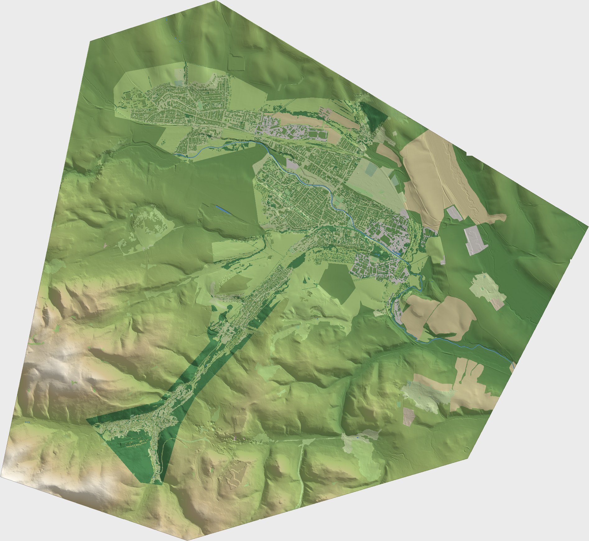

Spišská Nová Ves 3D
Načítavam…
Spišská Nová Ves
–
Prejsť pešo
Celé mesto
Mapa (klik = presun)

Vrstvy
Budovy, cesty, mosty, voda
Stromy
Lampy verejného osvetlenia
Zastávky MHD a lavičky
Dosah detailu
Detail
1.0×
Stav
–
PEŠO · Esc = späť
✎ Úprava budov
Zarovnanie 3D modelov
Choď tam
Krok
0.1
0.25
0.5
1
2
5
(° alebo m)
OSM obrys
⟲ proti hod.
↑ dopredu
⟳ po hod.
← vľavo
▲ hore
vpravo →
↓ dozadu
▼ dole
Vynulovať model
Kopírovať hodnoty
Smery „dopredu/vľavo“ sú podľa pohľadu kamery. Zmeny sa ukladajú v prehliadači; po dokončení pošli skopírované hodnoty.
ⓘ Ovládanie a zdroje dát
Myš:
ťahaj = otáčaj, koliesko = priblíž, pravé = posuň, dvojklik = postav sa tam.
Pešo:
W A S D, Shift = rýchlejšie, ťahaj = pohľad, Esc = späť.
Dáta: ÚGKK SR (DMR 5.0, LIDAR, ortofoto), © prispievatelia OpenStreetMap, Pasport svetelných miest (mesto Spišská Nová Ves).